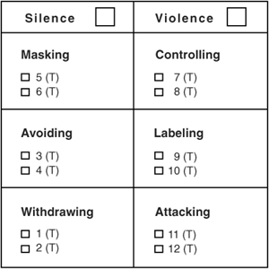
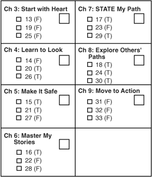

I have known a thousand scamps; but I never met one who considered himself so. Self-knowledge isn’t so common.
—OUIDA
Let’s start this chapter by visiting a crucial conversation. You’ve just ended a heated debate with a group of people you supervise. What started out as a harmless discussion about your new shift rotations ended up as a nasty argument. After an hour of carping and complaining, you finally went to your separate corners.
You’re now walking down the hall wondering what happened. In a matter of minutes an innocent discussion had transformed into a crucial conversation, and then into a failed conversation—and you can’t recall why. You do remember a tense moment when you started pushing your point of view a bit too hard (okay, maybe way too hard) and eight people stared at you as if you had just bitten the head off a chicken. But then the meeting ended.
What you don’t realize is that two of your friends are walking down the hallway in the opposite direction conducting a play-by-play of the meeting. They do know what took place.
“It happened again. The boss started pushing so hard for personal agenda items that we all began to act defensively. Did you notice how at one point all of our jaws dropped simultaneously? Of course, I was just as bad as the boss. I spoke in absolutes, only pointed out facts that supported my view, and then ended with a list of outlandish claims. I got hooked like a marlin.”
Later that day as you talk to your friends about the meeting, they let you in on what happened. You were there, but somehow you missed what actually happened.
“That’s because you were so caught up in the content of the conversation,” your buddy explains. “You cared so deeply about the shift rotation that you were blind to the conditions. You know—how people were feeling and acting, what tone they were taking, stuff like that.”
“You saw all that while still carrying on a heated conversation?” you ask.
“Yeah,” your coworker explains, “I always dual-process. That is, when things start turning ugly, I watch the content of the conversation along with what people are doing. I look for and examine both what and why. If you can see why people are becoming upset or holding back their views or even going silent, you can do something to get back on track.”
“You look at the ‘conditions,’ and then you know what to do to get back on track?”
“Sometimes,” your friend answers. “But you’ve got to learn exactly what to look for.”
“It’s a form of social first aid. By watching for the moment a conversation starts turning unhealthy, you can respond quickly. The sooner you catch a problem, the sooner you’ll be able to work your way back to healthy dialogue, and the less severe the damage.”
You can’t believe how obvious this advice is—and yet you’ve never thought of such a thing. Weirder still, your friend has. In fact, he has a whole vocabulary for what’s going on during a crucial conversation. It’s as if you’ve been speaking another language.
In truth, most of us do have trouble dual-processing (watching for content and conditions)—especially when it comes to a crucial conversation. When both stakes and emotions are high, we get so caught up in what we’re saying that it can be nearly impossible to pull ourselves out of the argument in order to see what’s happening to ourselves and to others. Even when we are startled by what’s going on, enough so that we think: “Yipes! This has turned ugly. Now what?” we may not know what to look for in order to turn things around. We may not see enough of what’s happening.
How could that be? How could we be smack-dab in the middle of a heated debate and not really see what’s going on? A metaphor might help. It’s akin to going fly fishing for the first time with an experienced angler. Your buddy keeps telling you to cast your fly six feet upstream from that brown trout “just out there.” Only you can’t see a brown trout “just out there.” He can. That’s because he knows what to look for. You think you do. You think you need to look for a brown trout. In reality, you need to look for a brown trout that’s under water while the sun is reflecting in your eyes. You have to look for elements other than the thing that your dad has stuffed and mounted over the fireplace. It takes both knowledge and practice to know what to look for and then actually see it.
So what do you look for when caught in the middle of a crucial conversation? What do you need to see in order to catch problems before they become too severe? Actually, it helps to watch for three different conditions: the moment a conversation turns crucial, signs that people don’t feel safe (silence or violence), and your own Style Under Stress. Let’s consider each of these conversation killers in turn.
First, stay alert for the moment a conversation turns from a routine or harmless discussion into a crucial one. In a similar vein, as you anticipate entering a tough conversation, pay heed to the fact that you’re about to enter the danger zone. Otherwise, you can easily get sucked into silly games before you realize what’s happened. And as we suggested earlier, the further you stray off track, the harder it can be to return.
To help catch problems early, reprogram your mind to pay attention to the signs that suggest you’re in a crucial conversation. Some people first notice physical signals—their stomach gets tight or their eyes get dry. Think about what happens to your body when conversations get tough. Everyone is a little bit different. What are your cues? Whatever they are, learn to look at them as signs to step back, slow down, and Start with Heart before things get out of hand.
Others notice their emotions before they notice signs in their body. They realize they are scared, hurt, or angry and are beginning to react to or suppress these feelings. These emotions can also be great cues to tell you to step back, slow down, and take steps to turn your brain back on.
Some people’s first cue is not physical or emotional, but behavioral. It’s like an out-of-body experience. They see themselves raising their voice, pointing their finger like a loaded weapon, or becoming very quiet. It’s only then that they realize how they’re feeling.
So take a moment to think about some of your toughest conversations. What cues can you use to recognize that your brain is beginning to disengage and you’re at risk of moving away from healthy dialogue?
If you can catch signs that the conversation is starting to turn crucial—before you get sucked so far into the actual argument that you can never withdraw from the content—then you can start dual-processing immediately. And what exactly should you watch for? People who are gifted at dialogue keep a constant vigil on safety. They pay attention to the content—that’s a given—and they watch for signs that people are afraid. When friends, loved ones, or colleagues move away from healthy dialogue (freely adding to the pool of meaning)—either forcing their opinions into the pool or purposefully keeping their ideas out of the pool—they immediately turn their attention to whether or not others feel safe.
When it’s safe, you can say anything. Here’s why gifted communicators keep a close eye on safety. Dialogue calls for the free flow of meaning—period. And nothing kills the flow of meaning like fear. When you fear that people aren’t buying into your ideas, you start pushing too hard. When you fear that you may be harmed in some way, you start withdrawing and hiding. Both these reactions—to fight and to take flight—are motivated by the same emotion: fear. On the other hand, if you make it safe enough, you can talk about almost anything and people will listen. If you don’t fear that you’re being attacked or humiliated, you yourself can hear almost anything and not become defensive.
Think about your own experience. Can you remember receiving really blistering feedback from someone at some point in your life, but in this instance you didn’t become defensive? Instead, you absorbed the feedback. You reflected on it. You allowed it to influence you. If so, ask yourself why. Why in this instance were you able to absorb potentially threatening feedback so well? If you’re like the rest of us, it’s because you believed that the other person had your best interest in mind. In addition, you respected the other person’s opinion. You felt safe receiving the feedback because you trusted the motives and ability of the other person. You didn’t need to defend yourself from what was being said.
On the other hand, if you don’t feel safe, you can’t take any feedback. It’s as if the pool of meaning has a lid on it. “What do you mean I look good? Is that some kind of joke? Are you ribbing me?” When you don’t feel safe, even well-intended comments are suspect.
When it’s unsafe, you start to go blind. By carefully watching for safety violations, not only can you see when dialogue is in danger, but you can also reengage your brain. As we’ve said before, when your emotions start cranking up, key brain functions start shutting down. Not only do you prepare to take flight, but your peripheral vision actually narrows. In fact, when you feel genuinely threatened, you can scarcely see beyond what’s right in front of you. Similarly, when you feel the outcome of a conversation is being threatened, you have a hard time seeing beyond the point you’re trying to make. By pulling yourself out of the content of an argument and watching for fear, you reengage your brain and your full vision returns.
Don’t let safety problems lead you astray. Let’s add a note of caution. When others begin to feel unsafe, they start doing nasty things. Now, since they’re feeling unsafe, you should be thinking to yourself: “Hey, they’re feeling unsafe. I need to do some-thing—maybe make it safer.” That’s what you should be thinking. Unfortunately, since others feel unsafe, they may be trying to make fun of you, insult you, or bowl you over with their arguments. This kind of aggressive behavior doesn’t exactly bring out the diplomat in you. So instead of taking their attack as a sign that safety is at risk, you take it at its face—as an attack. “I’m under attack!” you think. Then you respond in kind. Or maybe you try to escape. Either way you’re not dual-processing and then pulling out a skill to restore safety. Instead, you’re becoming part of the problem as you get pulled into the fight.
Imagine the magnitude of what we’re suggesting here. We’re asking you to recode silence and violence as signs that people are feeling unsafe. We’re asking you to fight your natural tendency to respond in kind. We’re asking you to undo years of practice, maybe even eons of genetic shaping that prod you to take flight or pick a fight (when under attack), and recode the stimulus. “Ah, that’s a sign that the other person feels unsafe.” And then what? Do something to make it safe. In the next chapter we’ll explore how. For now, simply learn to look for safety and then be curious, not angry or frightened.
As people begin to feel unsafe, they start down one of two unhealthy paths. They move either to silence (withholding meaning from the pool) or to violence (trying to force meaning in the pool). That part we know. But let’s add a little more detail. Just as a little knowledge of what to look for can turn blurry water into a brown trout, knowing a few of the common forms of silence and violence helps you see safety problems when they first start to happen. That way you can step out, restore safety, and return to dialogue—before the damage is too great.
Silence consists of any act to purposefully withhold information from the pool of meaning. It’s almost always done as a means of avoiding potential problems, and it always restricts the flow of meaning. Methods range from playing verbal games to avoiding a person entirely. The three most common forms of silence are masking, avoiding, and withdrawing.
 Masking consists of understating or selectively showing our true opinions. Sarcasm, sugarcoating, and couching are some of the more popular forms.
Masking consists of understating or selectively showing our true opinions. Sarcasm, sugarcoating, and couching are some of the more popular forms.
“I think your idea is, uh, brilliant. Yeah, that’s it. I just worry that others won’t catch the subtle nuances. Some ideas come before their time, so expect some, uh, minor resistance.”
Meaning: Your idea is insane, and people will fight it with their last breath.
“Oh yeah, that’ll work like a charm. Offer people a discount, and they’ll drive all the way across town just to save six cents on a box of soap. Where do you come up with this stuff?”
Meaning: What a dumb idea.
 Avoiding involves steering completely away from sensitive subjects. We talk, but without addressing the real issues.
Avoiding involves steering completely away from sensitive subjects. We talk, but without addressing the real issues.
“How does your new suit look? Well, you know that blue’s my favorite color.”
Meaning: What happened? Did you buy your clothes at the circus?
“Speaking of ideas for cost cutting—did you see Friends last night? Joey inherited a bunch of money and was buying stupid stuff. It was a hoot.”
Meaning: Let’s not talk about how to cut costs. It always leads to a fight.
 Withdrawing means pulling out of a conversation altogether. We either exit the conversation or exit the room.
Withdrawing means pulling out of a conversation altogether. We either exit the conversation or exit the room.
“Excuse me. I’ve got to take this call.”
Meaning: I’d rather gnaw off my own arm than spend one more minute in this useless meeting.
“Sorry, I’m not going to talk about how to split up the phone bill again. I’m not sure our friendship can stand another battle.” (Exits.)
Meaning: We can’t talk about even the simplest of topics without arguing.
Violence consists of any verbal strategy that attempts to convince, control, or compel others to your point of view. It violates safety by trying to force meaning into the pool. Methods range from name-calling and monologuing to making threats. The three most common forms are controlling, labeling, and attacking.
 Controlling consists of coercing others to your way of thinking. It’s done through either forcing your views on others or dominating the conversation. Methods include cutting others off, overstating your facts, speaking in absolutes, changing subjects, or using directive questions to control the conversation.
Controlling consists of coercing others to your way of thinking. It’s done through either forcing your views on others or dominating the conversation. Methods include cutting others off, overstating your facts, speaking in absolutes, changing subjects, or using directive questions to control the conversation.
“There’s not a person in the world who hasn’t bought one of these things. They’re the perfect gift.”
Meaning: I can’t justify spending our hard-earned savings on this expensive toy, but I really want it.
“We tried their product, but it was an absolute disaster. Everyone knows that they can’t deliver on time and that they offer the worst customer service on the planet.”
Meaning: I’m not certain of the real facts so I’ll use hyperbole to get your attention.
 Labeling is putting a label on people or ideas so we can dismiss them under a general stereotype or category.
Labeling is putting a label on people or ideas so we can dismiss them under a general stereotype or category.
“Your ideas are practically Neanderthal. Any thinking person would follow my plan.”
Meaning: I can’t argue my case on its merits.
“You’re not going to listen to them are you? For crying out loud! First, they’re from headquarters. Second, they’re engineers. Need I say more?”
Meaning: If I pretend that all people from headquarters and all engineers are somehow bad and wrong, I won’t have to explain anything.
 Attacking speaks for itself. You’ve moved from winning the argument to making the person suffer. Tactics include belittling and threatening.
Attacking speaks for itself. You’ve moved from winning the argument to making the person suffer. Tactics include belittling and threatening.
“Try that stupid little stunt and see what happens.”
Meaning: I will get my way on this even if I have to bad-mouth you and threaten some vague punishment.
“Don’t listen to a word Jim is saying. I’m sorry Jim, but I’m on to you. You’re just trying to make it better for your team while making the rest of us suffer. I’ve seen you do it before. You’re a real jerk, you know that? I’m sorry, but someone has to have the guts to tell it like it is.”
Meaning: To get my way I’ll say bad things about you and then pretend that I’m the only one with any integrity.
Let’s say you’ve been watching for both content and conditions. You’re paying special attention to when a conversation turns crucial. To catch this important moment, you’re looking for signs that safety is at risk. As safety is violated, you even know to watch for various forms of silence and violence. So are you now fully armed? Have you seen all there is to see?
Actually, no. Perhaps the most difficult element to watch closely as you’re madly dual-processing is your own behavior. Frankly, most people have trouble pulling themselves away from the tractor beam of the argument at hand. Then you’ve got the problem other people present as they employ all kinds of tactics. You’ve got to watch them like a hawk. It’s little wonder that paying close attention to your own behavior tends to take a back-seat. Besides, it’s not like you can actually step out of your body and observe yourself. You’re on the wrong side of your eyeballs.
Low self-monitors. The truth is, we all have trouble monitoring our own behavior at times. We usually lose any semblance of social sensitivity when we become so consumed with ideas and causes that we lose track of what we’re doing. We try to bully our way through. We speak when we shouldn’t. We do things that don’t work—all in the name of a cause. We eventually become so unaware that we become a bit like this fellow of Jack Handy’s invention.
“People were always talking about how mean this guy was who lived on our block. But I decided to go see for myself. I went to his door, but he said he wasn’t the mean guy, the mean guy lived in that house over there. ‘No, you stupid idiot,’ I said, ‘that’s my house.’”
Unfortunately, when you fail to monitor your own behavior, you can look pretty silly. For example, you’re talking to your spouse about the fact that he or she left you sitting at the auto repair shop for over an hour. After pointing out that it was a simple misunderstanding, your spouse exclaims: “You don’t have to get angry.”
Then you utter those famous words: “I’m not angry!”
Of course, you’re spraying spit as you shout out your denial, and the vein on your forehead has swelled to the size of a teenage python. You, quite naturally, don’t see the inconsistency in your response. You’re in the middle of the whole thing, and you don’t appreciate it one bit when your spouse laughs at you.
You also play this denial game when you ingenuously answer the question, “What’s wrong?”
“Nothing’s wrong,” you whimper. Then you shuffle your feet, stare at the floor, and look wounded.
What does it take to be able to step out of an argument and watch for process—including what you yourself are doing and the impact you’re having? You have to become a vigilant self-monitor. That is, pay close attention to what you’re doing and the impact it’s having, and then alter your strategy if necessary. Specifically, watch to see if you’re having a good or bad impact on safety.
What kind of a self-monitor are you? One good way to increase your self-awareness is to explore your Style Under Stress. What do you do when talking turns tough? To find out, fill out the survey on the following pages. Or, for easier scoring, visit www.crucialconversations.com/sus. It’ll help you see what tactics you typically revert to when caught in the midst of a crucial conversation. It’ll also help you determine which parts of this book can be most helpful to you.
Instructions. The following questions explore how you typically respond when you’re in the middle of a crucial conversation. Before answering, pick a specific relationship at work or at home. Then answer the items while thinking about how you typically approach risky conversations in that relationship.
Please fill out the score sheets in Figures 4-1 and 4-2. Each domain contains two to three questions. Next to the question number is either a (T) or an (F). For example, under “Masking,” question 5 on Figure 4-1, you’ll find a (T). This means that if you answered it true, check the box. With question 13 on Figure 4-2, on the other hand, you’ll find an (F). Only check that box if you answered the question false—and so on.
Your Style Under Stress score (Figure 4-1) will show you which forms of silence or violence you turn to most often. Your Dialogue Skills score (Figure 4-2) is organized by concept and chapter so you can decide which chapters may benefit you the most.
Your silence and violence scores give you a measure of how frequently you fall into these less-than-perfect strategies. It’s actually possible to score high in both. A high score (one or two checked boxes per domain) means you use this technique fairly often. It also means you’re human. Most people toggle between holding back and becoming too forceful.
The seven domains in Figure 4-2 reflect your skills in each of the corresponding seven skill chapters. If you score high (two or

Figure 4-1. Score Sheet for Style Under Stress Assessment
three boxes) in one of these domains, you’re already quite skilled in this area. If you score low (zero or one), you may want to pay special attention to these chapters.
Since these scores represent how you typically behave during stressful or crucial conversations, they can change. Your score doesn’t represent an inalterable character trait or a genetic propensity. It’s merely a measure of your behavior—and you can change that. In fact, people who take this book seriously will practice the skills contained in each chapter and eventually they will change. And when they do, so will their lives.
What next? Now that you’ve identified your own Style Under Stress, you have a tool that can help you Learn to Look. That is, as you enter a touchy conversation, you can make a special effort

Figure 4-2. Score Sheet for Dialogue Skills Assessment
to avoid some of your silence or violence habits. Also, when you’re in the middle of a crucial conversation, you can be more conscious of what to watch for.
When caught up in a crucial conversation, it’s difficult to see exactly what’s going on and why. When a discussion starts to become stressful, we often end up doing the exact opposite of what works. We turn to the less healthy components of our Style Under Stress.
To break from this insidious cycle, Learn to Look.
 Learn to look at content and conditions.
Learn to look at content and conditions.
 Look for when things become crucial.
Look for when things become crucial.
 Learn to watch for safety problems.
Learn to watch for safety problems.
 Look to see if others are moving toward silence or violence.
Look to see if others are moving toward silence or violence.
 Look for outbreaks of your Style Under Stress.
Look for outbreaks of your Style Under Stress.
Assess your own “Style Under Stress” Online |
To access a self-scoring version of the Style Under Stress test, as well as other free resources to help you master crucial conversations, visit www.vitalsmarts.com/bookresources. |